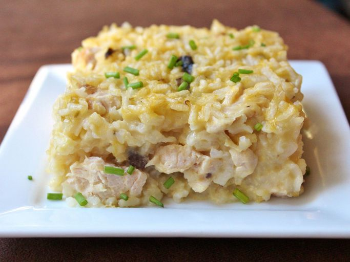

Mamaw's-Chicken-and-Rice-Casserole

Description
There's nothing like an old-fashioned recipe straight from your grandma's recipe box. Need proof? Mamaw's Chicken and Rice Casserole is comfort food incarnate.
This simple, affordable, and absolutely irresistible meal will warm you up from the inside out.
Learn how to make, store, freeze, and serve this easy chicken and rice casserole:
Ingridients
- 3 chicken breasts, cut into cubes
- 2 cups water
- 2 cups instant white rice
- 1 (10.75 ounce) can cream of chicken soup
- 1 (10.75 ounce) can cream of celery soup
- 1 (10.75 ounce) can cream of mushroom soup
- salt and ground black pepper to taste
- ½ cup butter, sliced into pats
Directions/Steps
- Gather all ingredients.
- Preheat oven to 400 degrees F (200 degrees C). Grease sides and bottom of a casserole dish.
- Stir chicken, water, rice, cream of chicken soup, cream of celery soup,
and cream of mushroom soup together in the prepared casserole dish; season with salt and pepper.
- Arrange butter evenly over the top of the chicken mixture.
- Bake in preheated oven until the rice is tender and the chicken is cooked through, 1 hour to 75 minutes. Cool 10 to 15 minutes before serving.